# Part 5
# Simple linear regression
# cleaning workspace ------------------------------------------------------
# let's clean our workspace:
ls() # gives a list of objects that are currently stored
## character(0)
rm(cl) # remove object m1
## Warning in rm(cl): object 'cl' not found
rm(list = ls()) #remove all objects
# Simple linear regression ------------------------------------------------
pairs(airquality)
# first think about what is explanatory / predictor
# and what is the dependent variable (e.g. in Ozone and Temp)
# par(mfrow = c(1, 1))
plot(Ozone ~ Temp, data = airquality)
fit1 = lm(Ozone ~ Temp, data = airquality)
summary(fit1)
##
## Call:
## lm(formula = Ozone ~ Temp, data = airquality)
##
## Residuals:
## Min 1Q Median 3Q Max
## -40.729 -17.409 -0.587 11.306 118.271
##
## Coefficients:
## Estimate Std. Error t value Pr(>|t|)
## (Intercept) -146.9955 18.2872 -8.038 9.37e-13 ***
## Temp 2.4287 0.2331 10.418 < 2e-16 ***
## ---
## Signif. codes: 0 '***' 0.001 '**' 0.01 '*' 0.05 '.' 0.1 ' ' 1
##
## Residual standard error: 23.71 on 114 degrees of freedom
## (37 observations deleted due to missingness)
## Multiple R-squared: 0.4877, Adjusted R-squared: 0.4832
## F-statistic: 108.5 on 1 and 114 DF, p-value: < 2.2e-16
# gives a negative values for the intercept = negative Ozone levels when Temp = 0
# this does not make sense (>extrapolation)
# we can also fit a model without intercept,
# without means: intercept = 0; y = a*x
# although this doesn't make much sense here
fit2 = lm(Ozone ~ Temp - 1, data = airquality)
summary(fit2)
##
## Call:
## lm(formula = Ozone ~ Temp - 1, data = airquality)
##
## Residuals:
## Min 1Q Median 3Q Max
## -38.47 -23.26 -12.46 15.15 121.96
##
## Coefficients:
## Estimate Std. Error t value Pr(>|t|)
## Temp 0.56838 0.03498 16.25 <2e-16 ***
## ---
## Signif. codes: 0 '***' 0.001 '**' 0.01 '*' 0.05 '.' 0.1 ' ' 1
##
## Residual standard error: 29.55 on 115 degrees of freedom
## (37 observations deleted due to missingness)
## Multiple R-squared: 0.6966, Adjusted R-squared: 0.6939
## F-statistic: 264 on 1 and 115 DF, p-value: < 2.2e-16
plot(Ozone ~ Temp, data = airquality, xlim = c(0,100), ylim = c(-150, 150))
abline(fit1, col = "green")
abline(fit2, col = "red", lty = 2)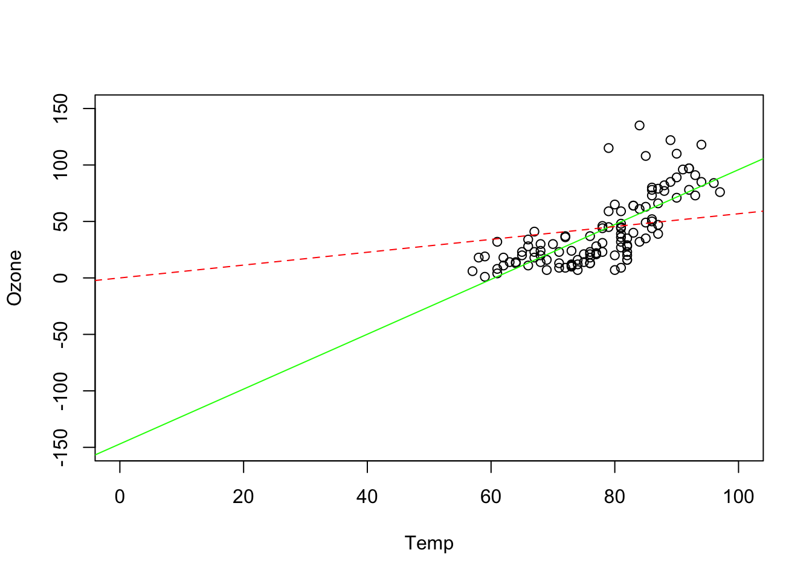
# there is no need to check normality of Ozone
hist(airquality$Ozone) # this is not normal, and that's no problem !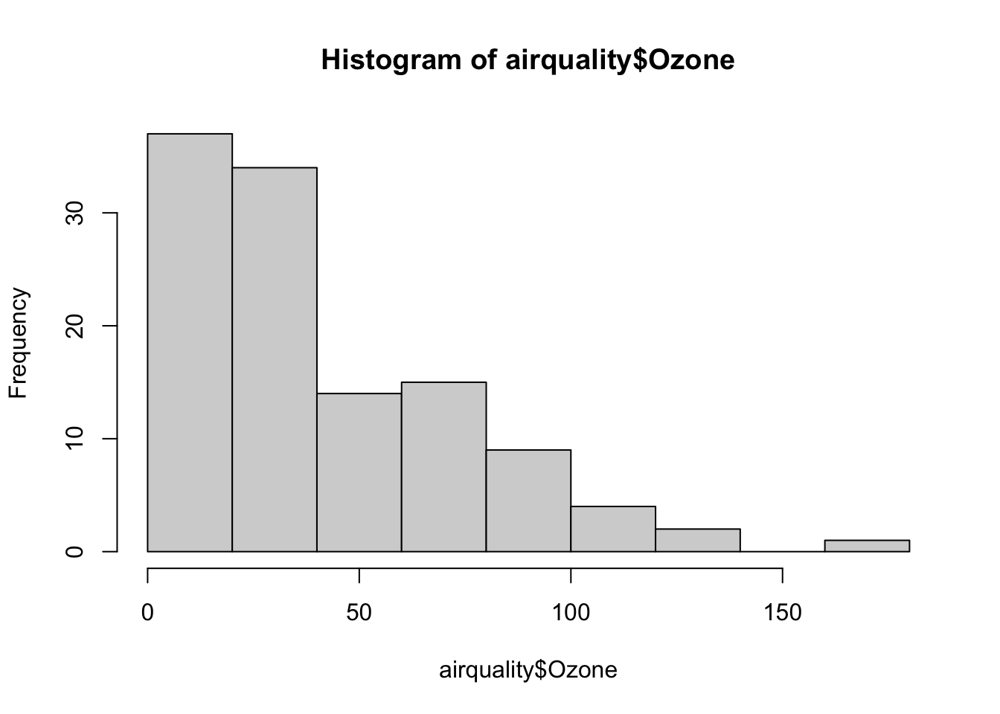
# instead: the residuals must be normal!!!!!!!!
residuals(fit1)
## 1 2 3 4 6 7
## 25.2723695 8.1288530 -20.7285536 14.4158861 14.7010729 12.1297762
## 8 9 11 12 13 14
## 22.7019960 6.8445894 -25.7285536 -4.5850371 -2.2989271 -4.1563338
## 15 16 17 18 19 20
## 24.1306993 5.5584795 20.7010729 14.5594026 11.8436662 7.4158861
## 21 22 23 24 28 29
## 4.7019960 -19.2998503 2.8445894 30.8445894 7.2723695 -4.7294767
## 30 31 38 40 41 44
## 70.1279299 -0.5859602 -23.1581800 -0.5878065 -25.3016966 -29.1581800
## 47 48 49 50 51 62
## -19.0146635 9.1288530 9.1297762 -18.2998503 -24.5859602 77.9844134
## 63 64 66 67 68 69
## -10.4442899 -17.7294767 9.4131167 -14.5868833 10.2696001 20.5547869
## 70 71 73 74 76 77
## 20.5547869 15.8408968 -20.2998503 -22.7294767 -40.3007734 -1.7294767
## 78 79 80 81 82 85
## -17.1581800 3.9844134 14.6983034 3.5557101 -16.7285536 18.1270068
## 86 87 88 89 90 91
## 48.5557101 -32.1581800 -9.8729932 15.2696001 -11.8729932 9.4131167
## 92 93 94 95 96 97
## 9.2705233 -10.7294767 -40.7294767 -36.1581800 16.1270068 -24.4442899
## 98 99 100 101 104 105
## 1.6983034 52.8408968 17.4121935 38.4121935 -17.8729932 -24.1581800
## 106 108 109 110 111 112
## 17.6992266 -18.0146635 14.1279299 -14.5859602 -11.4433668 1.5566332
## 113 114 116 117 118 120
## -19.0146635 -18.8711470 0.1279299 118.2705233 11.1270068 -12.5887296
## 121 122 123 124 125 126
## 36.6973803 -2.1600263 3.6973803 21.9834902 1.5547869 -5.8739164
## 127 128 129 130 131 132
## 12.1260836 -17.3016966 -25.0155866 -27.3007734 -19.4433668 -14.1572569
## 133 134 135 136 137 138
## -6.2998503 -5.7294767 -16.5859602 -12.0146635 -16.4424437 -12.4424437
## 139 140 141 142 143 144
## 3.5566332 2.2723695 -24.5859602 5.8436662 -36.1581800 4.5584795
## 145 146 147 148 149 151
## -2.4424437 -13.7294767 -13.5850371 7.9871828 6.9862596 -21.1572569
## 152 153
## -19.5859602 1.8436662
hist(residuals(fit1))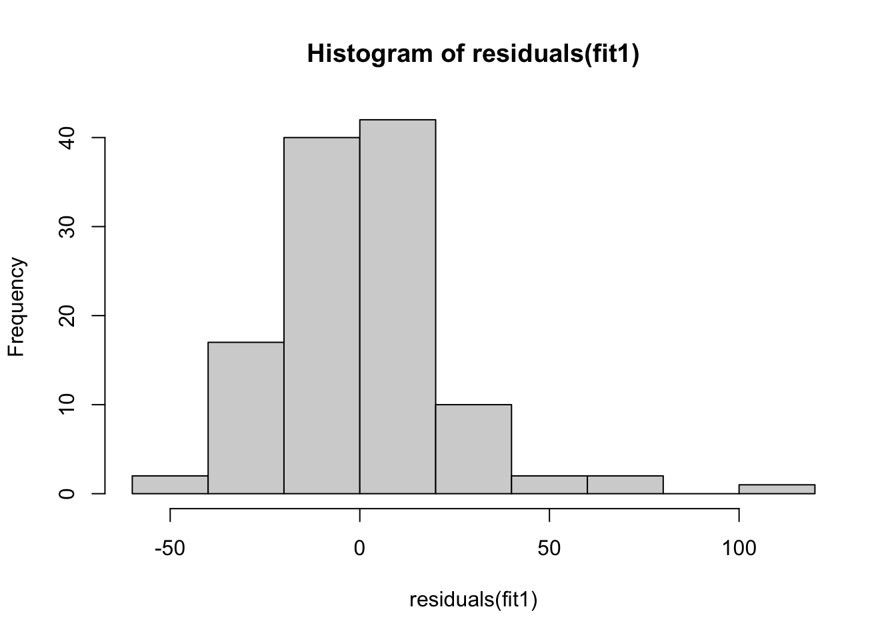
# residuals are not normally distributed
# we do not use a test for this, but instead look at the residuals visually
# let's plot resiuals versus predictor
plot(airquality$Temp[!is.na(airquality$Ozone)], residuals(fit1))
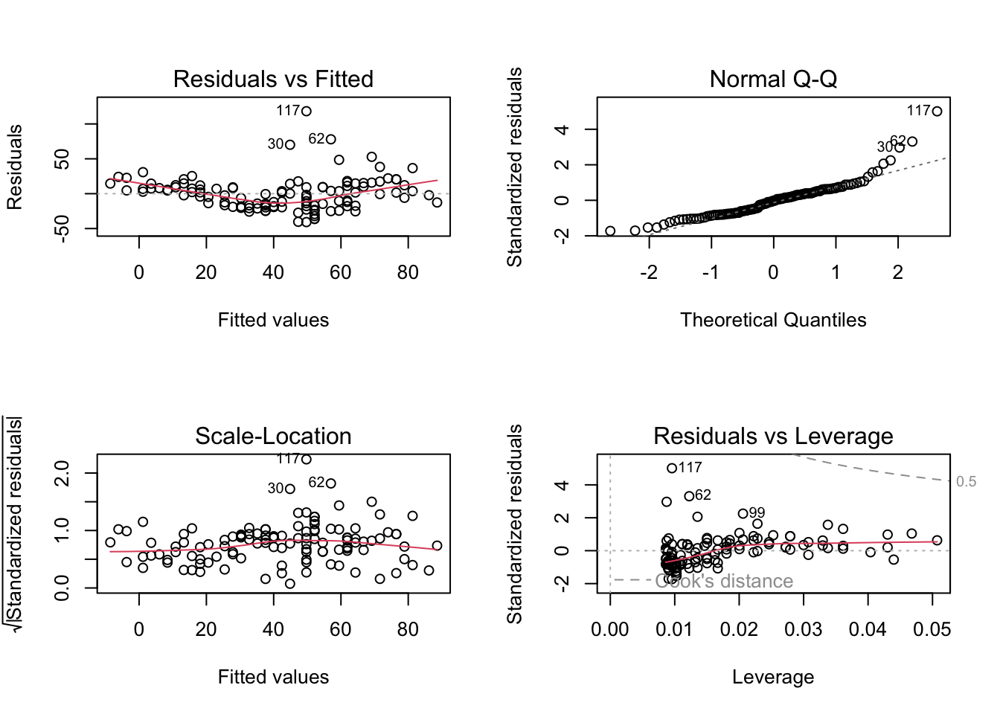
par(oldpar)
#> there's a pattern in the residuals > the model does not fit very well!
# Quadratic term ----------------------------------------------------------
## what does simple linear regression mean?
# simple = one predictor!
# linear = linear in the parameters
# a0 + a1 * x + a2 * x^2
# even if we add a quadratic term, this is a linear combination
# this is called polynomial
fit3 = lm(Ozone ~ Temp + I(Temp^2), data = airquality)
summary(fit3)
##
## Call:
## lm(formula = Ozone ~ Temp + I(Temp^2), data = airquality)
##
## Residuals:
## Min 1Q Median 3Q Max
## -37.619 -12.513 -2.736 9.676 123.909
##
## Coefficients:
## Estimate Std. Error t value Pr(>|t|)
## (Intercept) 305.48577 122.12182 2.501 0.013800 *
## Temp -9.55060 3.20805 -2.977 0.003561 **
## I(Temp^2) 0.07807 0.02086 3.743 0.000288 ***
## ---
## Signif. codes: 0 '***' 0.001 '**' 0.01 '*' 0.05 '.' 0.1 ' ' 1
##
## Residual standard error: 22.47 on 113 degrees of freedom
## (37 observations deleted due to missingness)
## Multiple R-squared: 0.5442, Adjusted R-squared: 0.5362
## F-statistic: 67.46 on 2 and 113 DF, p-value: < 2.2e-16
oldpar= par(mfrow = c(2,2))
plot(fit3)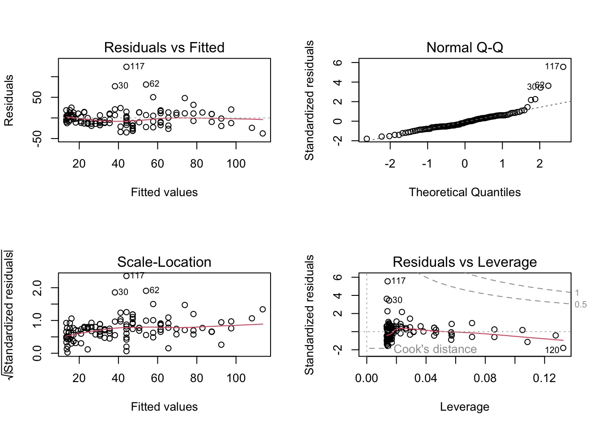
par(oldpar)
# Residual vs. fitted looks okay, but Outliers are still there, and additionally
# too wide. But for now, let's plot prediction with uncertainty (plot line plus confidence interval)
plot(Ozone ~ Temp, data = airquality)
# if the relationship between x and y is not linear, we cannot use abline
# instead we predict values of x for different values of y based on the model
newDat = data.frame(Temp = 55:100)
predictions = predict(fit3, newdata = newDat, se.fit = T)
# and plot these into our figure:
lines(newDat$Temp, predictions$fit, col= "red")
# let's also plot the confidence intervals:
lines(newDat$Temp, predictions$fit + 1.96*predictions$se.fit, col= "red", lty = 2)
lines(newDat$Temp, predictions$fit - 1.96*predictions$se.fit, col= "red", lty = 2)
# add a polygon (shading for confidence interval)
x = c(newDat$Temp, rev(newDat$Temp))
y = c(predictions$fit - 1.96*predictions$se.fit,
rev(predictions$fit + 1.96*predictions$se.fit))
polygon(x,y, col="#99009922", border = F )
# alternative: use package effects
#install.packages("effects")
library(effects)
## Loading required package: carData
## lattice theme set by effectsTheme()
## See ?effectsTheme for details.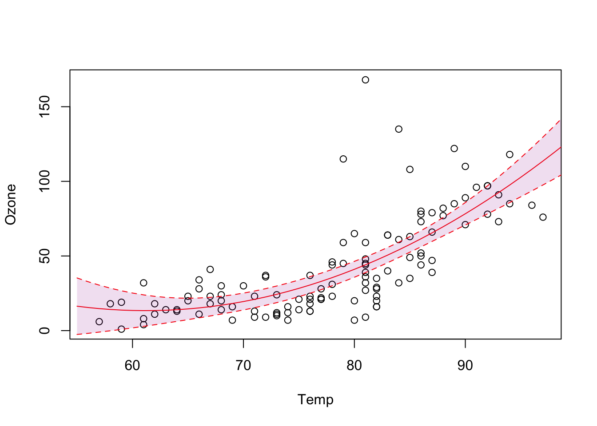
plot(allEffects(fit3))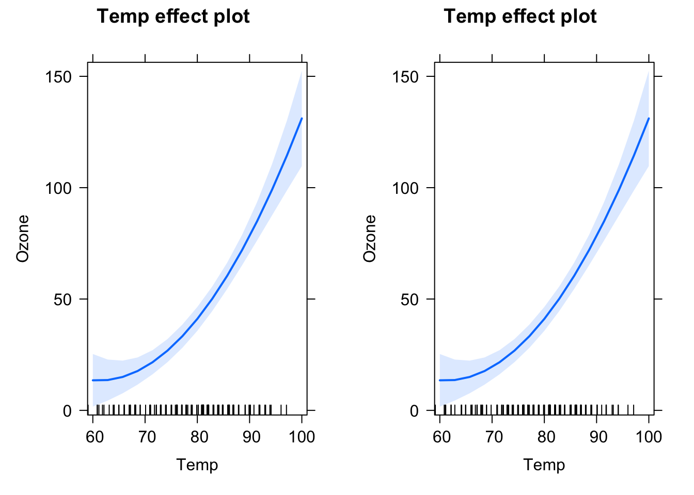
plot(allEffects(fit3, partial.residuals = T)) 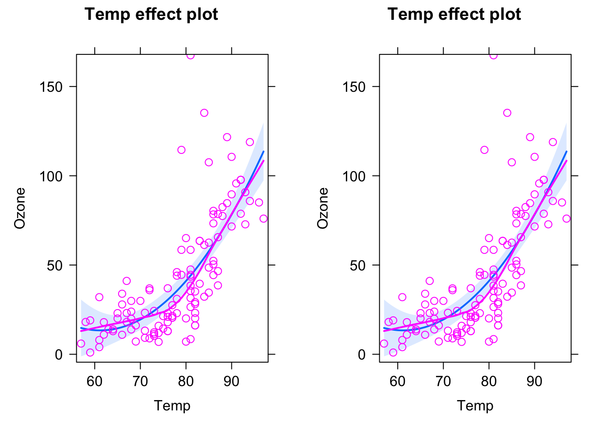
#to check patterns in residuals (plots measurements and partial residuals)
# or jtools package
library(jtools)
effect_plot(fit3, pred = Temp, interval = TRUE, plot.points = TRUE)
# Categorial predictors ---------------------------------------------------
summary(chickwts)
## weight feed
## Min. :108.0 casein :12
## 1st Qu.:204.5 horsebean:10
## Median :258.0 linseed :12
## Mean :261.3 meatmeal :11
## 3rd Qu.:323.5 soybean :14
## Max. :423.0 sunflower:12
plot(weight ~ feed, chickwts)
fit4 = lm(weight ~ feed, chickwts)
summary(fit4)
##
## Call:
## lm(formula = weight ~ feed, data = chickwts)
##
## Residuals:
## Min 1Q Median 3Q Max
## -123.909 -34.413 1.571 38.170 103.091
##
## Coefficients:
## Estimate Std. Error t value Pr(>|t|)
## (Intercept) 323.583 15.834 20.436 < 2e-16 ***
## feedhorsebean -163.383 23.485 -6.957 2.07e-09 ***
## feedlinseed -104.833 22.393 -4.682 1.49e-05 ***
## feedmeatmeal -46.674 22.896 -2.039 0.045567 *
## feedsoybean -77.155 21.578 -3.576 0.000665 ***
## feedsunflower 5.333 22.393 0.238 0.812495
## ---
## Signif. codes: 0 '***' 0.001 '**' 0.01 '*' 0.05 '.' 0.1 ' ' 1
##
## Residual standard error: 54.85 on 65 degrees of freedom
## Multiple R-squared: 0.5417, Adjusted R-squared: 0.5064
## F-statistic: 15.36 on 5 and 65 DF, p-value: 5.936e-10
anova(fit4) #get overall effect of feeding treatment
## Analysis of Variance Table
##
## Response: weight
## Df Sum Sq Mean Sq F value Pr(>F)
## feed 5 231129 46226 15.365 5.936e-10 ***
## Residuals 65 195556 3009
## ---
## Signif. codes: 0 '***' 0.001 '**' 0.01 '*' 0.05 '.' 0.1 ' ' 1
plot(allEffects(fit4))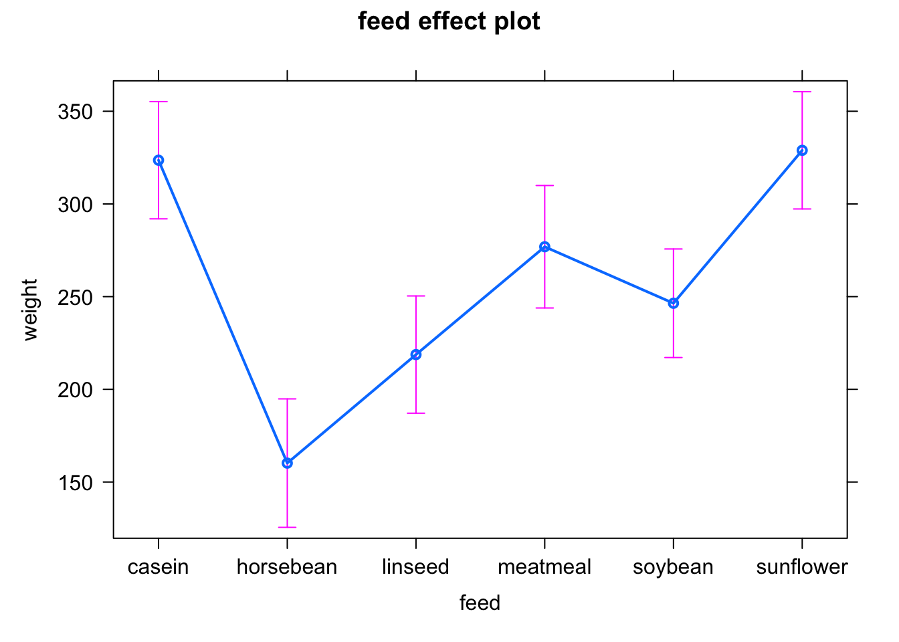
plot(allEffects(fit4, partial.residuals = T))effect_plot(fit4, pred = feed, interval = TRUE, plot.points = F)
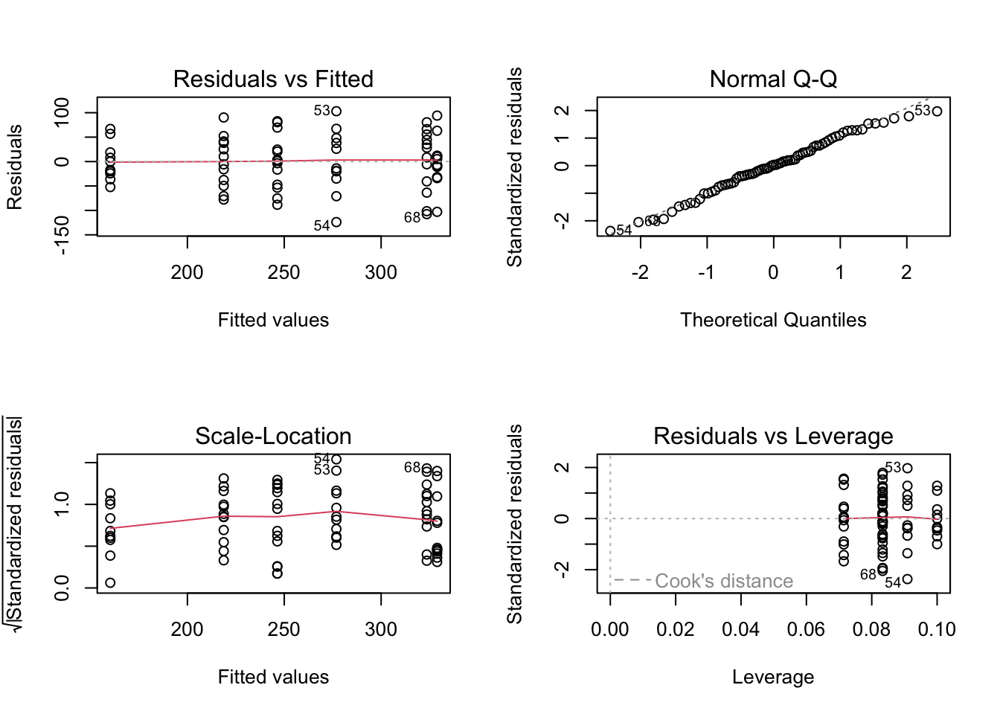
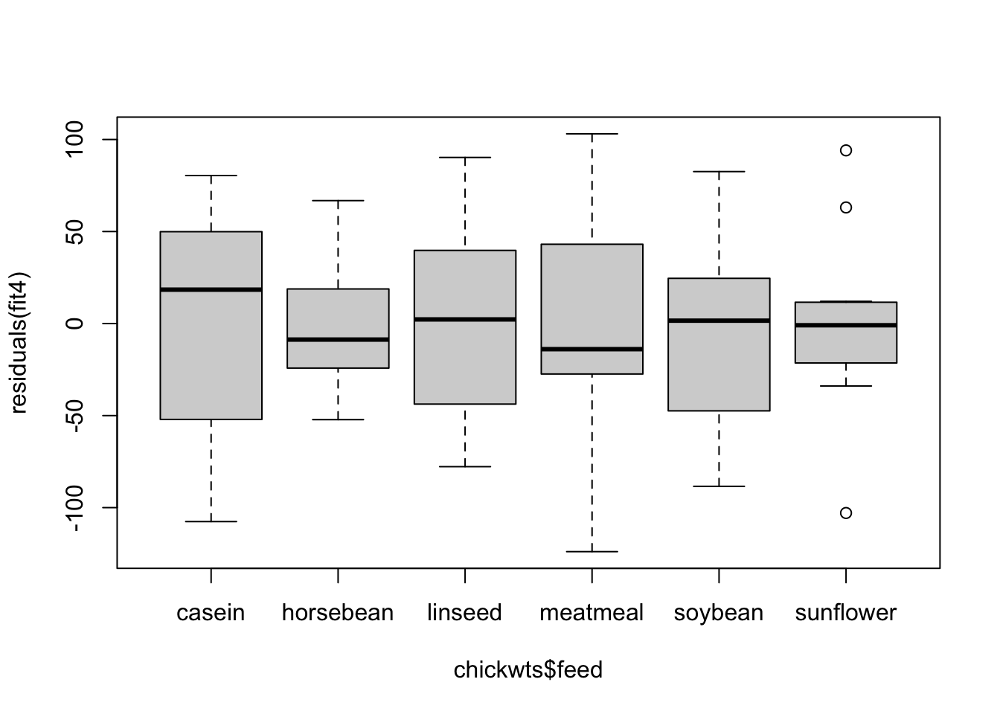